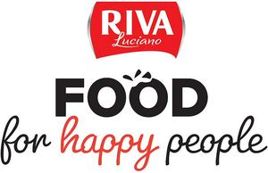

Trade Mark Journal No.2025/009 28 February 2025
WO0000001839400 (29,30,32)
Office of origin: Italy

The trademark consists of an imprint depicting a horizontal stylized quadrilateral label, red in color, with its lower side curved inward and with the vertical sides curved outward and shaded in grey, which contains the wording RIVA in fancy characters, white in color, underlined by the wording LUCIANO in fancy characters of smaller dimensions, white in color, the letter L having the upper end placed over the end of the terminal stroke of the right foot of the letter R and having the horizontal stroke extending to the right to partially underline the word itself, the whole surmounting the wording FOOD FOR HAPPY PEOPLE in fancy characters arranged on two levels, the portion FOOD being of larger dimensions, black in color, three stylized segments detaching upwards from the upper eyelet of its second letter O, the portion FOR HAPPY PEOPLE being below in fancy characters, of smaller dimensions, black in color except for the portion HAPPY which is red in color.
The mark contains the colours red, black, white and grey.
- Class 29
- Olive purée; vegetable purée; goose liver pâté; dairy-based spreads; cheese in the form of dips; garlic-based spreads; preserved garlic; preserved tomato; tomato paste; vegetable pastes; pickled vegetables; vegetables preserved in oil; bottled vegetables; vegetables, tinned; sliced vegetables, canned; olives, canned; processed olives, canned; olives, prepared; artichokes, prepared; artichokes, processed; artichoke paste; peeled tomatoes; tomatoes, processed; tomatoes, canned; pickled cucumbers; onions, prepared; onions, processed; preserved onions; pickled onions; aubergines, processed; mushrooms, prepared; mushrooms, processed; edible mushrooms, dried; aubergine paste; olive paste; vegetable-based cream; nut-based spreads; hazelnut spreads; fat-based spreads for bread slices; stock cubes; pickled fruits; marinated fruits; bottled sliced fruits; fruit preserves; fruit leathers; organic nut and seed-based snack bars; fruit-based snack food; pulse-based snack food; entries consisting primarily of meat, fish, poultry or vegetables; luncheon meats, tinned; luncheon meats; bottled fish products; spiced oils; flavored yogurt; yogurt-based beverages; frozen meals consisting primarily of meat, fish, poultry or vegetables; frozen prepared meals consisting primarily of vegetables; dried fruit-based snack foods; meat, fish, poultry and game; meat extracts; preserved, frozen dried and cooked fruits and vegetables; jellies, jams, compotes; eggs; milk, cheese, butter, yogurt and other milk products; oils and fats for food; potato sticks; potato crisps; vegetable-based chips.
- Class 30
- Tea sandwiches; sandwiches containing cold cuts, cheeses, vegetables, meat, poultry, fish, eggs; filled buns; mayonnaise; meat gravies; sauces [condiments]; sauce mixes; tomato sauce; vegetable pastes [sauces]; pesto; sweet pickle [condiment]; chocolate spreads for use on bread; dried herbs for culinary purposes; processed herbs [seasonings]; food dressings [sauces]; wheat-based snack foods; corn chips; rice-based snack food, prepared meals consisting primarily of pasta; prepared meals consisting primarily of rice; saffron [seasoning]; dried chili peppers [seasoning]; pimientos [condiments]; apple sauce [condiment]; cranberry sauce [condiment]; processed shallots for use as seasoning; crystallized lemon juice [seasoning]; dry seasoning mixes for stews; savory sauces used as condiments; food condiment consisting primarily of ketchup and salsa; mustard; chili oil for use as a seasoning or condiment; processed garlic for use as seasoning; cereal-based snack bars; milk chocolate bars; candy bars; cocoa-based beverages; coffee-based beverages; chamomile-based beverages; chocolate-based beverages; tea-based beverages; biscuits; salted wafer biscuits; aperitif biscuits; brownies; puddings; milk puddings; rice dumplings; capers; chewing candy; boiled sugar sweets; gummy candies; filled caramels; breakfast cereals, grain-based chips; edible wafers; frozen waffles; chocolates; filled chocolates; vegetable concentrates used for seasoning; salad dressings containing cream; custard; chocolate creams; bavarian creams; crème brûlée; crème caramels; sweet spreads [honey]; chocolate desserts; ice cream desserts; frozen yogurt confections; ice cream cakes; frozen pies; pies; chocolate fondue; yogurt-based ice cream, ice cream predominating; ice cream, sorbets and other edible ices; vegan ice cream; fruit ice bars; pasta salads; rice salads; meringues; puffed cheese balls [corn snacks]; hamburgers [sandwiches]; hot dog sandwiches; filled sandwiches containing hamburgers; fish sandwiches; sandwiches containing chicken; toasted sandwiches; sandwich wraps [bread]; baozi [stuffed buns]; wrap sandwiches; sandwich wrap [bread]; frozen meals consisting primarily of pasta or rice; corn chips; vegetable flavored corn chips; rice crisps; wholewheat crisps; frozen pizzas; pizzas; plum cakes; popcorn; boxed lunches consisting of rice, with added meat, fish or vegetables; pre- packaged lunches consisting primarily of rice, and also including meat, fish or vegetables, profiteroles; vegetable purees [sauces]; hot chili pepper sauce; sweet and sour sauce; curry sauce; barbecue sauce; concentrated sauce; shrimp pastes [sauces]; horseradish sauce; dried sauce in powder form; taco sauce; tartar sauce; Worcestershire sauce; mushroom sauces; mayonnaise-based sauces; kombu soy sauce; pepper sauces; sauces flavored with nuts; canned sauces; salsa sauces; sauces for barbecued meat; dressings for salad; basting sauces; sandwiches; cereal-based snack food; corn-based snack food; snack made from wheat; flour based snack foods; extruded wheat snacks; extruded corn snacks; muesli snacks; puffed corn snacks; snack mixes consisting of crackers, pretzels or popped popcorn; tacos; taco chips; tiramisu; French toast; tarts, fruit cakes; cream pies; ice cream frozen pies; gâteaux; vegan cakes; wafer [food]; coffee, tea, cocoa and substitutes therefor; rice, pasta and noodles; tapioca and sago; flour and preparations made from cereals; bread, pastries and confectionery; chocolate; sugar, honey, treacle; yeast, baking-powder; salt, seasonings, spices, preserved herbs; vinegar, sauces and other condiments; ice for refreshment.
- Class 32
- Fruit-based beverages; smoothies; vegetable-based beverages; fruit beverages; fruit-based soft drinks flavoured with tea; non-alcoholic beverages enriched with vitamins and mineral salts; non-alcoholic flavoured carbonated beverages; fruit smoothies; vegetable smoothies; syrups for making beverages; orange juice; pineapple juice; cider, non-alcoholic; pomegranate juice; cranberry juice; grapefruit juice; grape juice; sherbets [beverages]; beers; non-alcoholic beverages; mineral and aerated waters; fruit beverages and fruit juices; syrups and other preparations for making non-alcoholic beverages.
RIVA ALIMENTARI UNITI S.R.L.
Representative: Dr. Modiano & Associati SpA, Via Meravigli, 16, I-20123 Milano, ITALY